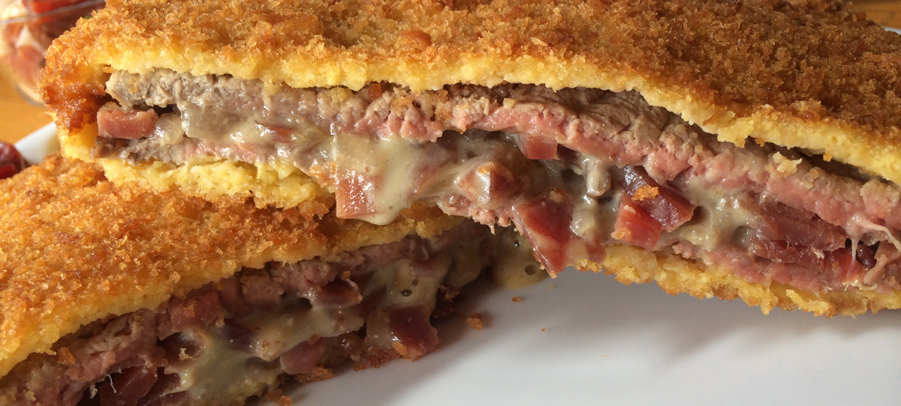
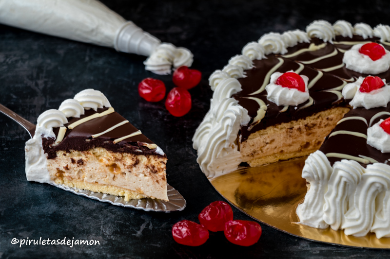

Cachopo

El cachopo es un plato tradicional asturiano consistente en dos filetes grandes de ternera empanados con un relleno de jamón y queso (a veces también champiñones, pimientos o txistorra), fritos hasta quedar dorados y crujientes. Suele servirse acompañado de patatas fritas, pimientos y ensalada, y destaca por su textura jugosa por dentro y crujiente por fuera; es una especialidad contundente y muy popular en restaurantes de Asturias.
Charlota de Gijón

La charlota de Gijón es un postre tradicional asturiano, ligero y elegante: un molde cubierto por bizcochos o lenguas de gato que guarda un relleno cremoso (frecuentemente mousse de chocolate, crema pastelera o nata) y a veces capas de frutas o licor fino; se sirve frío y suele decorarse con cacao, virutas de chocolate o frutas, un contraste de texturas entre el exterior esponjoso y el interior sedoso.